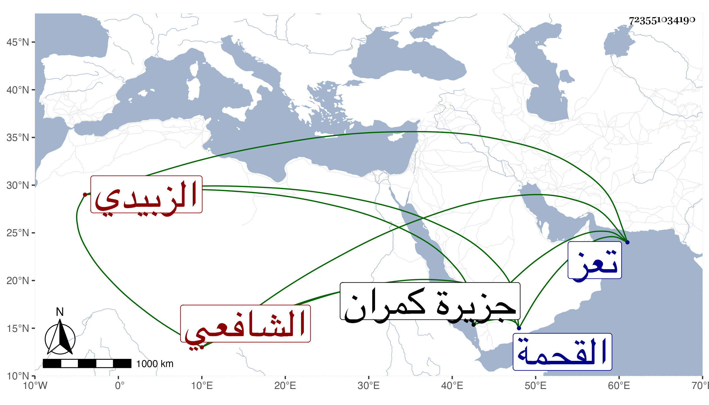

0902Sakhawi.DawLamic.ITO20230111-ara1.EIS1600.723551034190
Biography ID: 723551034190
480
عثمان بن محمد بن عبد الله بن عمر بن أبي بكر بن عمر بن عبد الرحمن ابن عبد الله أبو عمر والناشري الزبيدي الشافعي والد أبي بكر الآتي . ولد سنة أربع وسبعين وسبعمائة وتفقه بأبيه في آخرين كأخيه العفيف عبد الله وسافر له إلى تعز حين قضائه لها فاجتمع به أيضا وبمن بها من العلماء ولكنه عجز عن شدة بردها فتحول لموزع فأخذ عن محمد بن علي بن نور الدين وله إجازات من جماعة وكان جيد الفقه وقواعده والأصول والنحو متقدما في المناظرة بليغ المحاورة فقيه النفس كريما لطيف الإشارة حسن العبارة مقتدرا على استنباط المعاني البديعة مملوء كمالا وعقلا وعلما وفضلا مع خبرة بالشروط وصلاح وهيبة بحيث خلصت امرأة من الجنون برؤيته وعد ذلك في بركته ولي قضاء القحمة مدة وعمر بها مسجدا ثم المهجم بعد موت أخيه العفيف مع تدريس جامعها المظفري . مات بجزيرة كمران في توجهه للحج ثاني شوال سنة سبع وثلاثين ودفن جوار ابن المبرك وحكوا عنه قرب موته أمورا تدل على ولايته . ترجمه العفيف عثمان الناشري بما هذا ملخصه .
